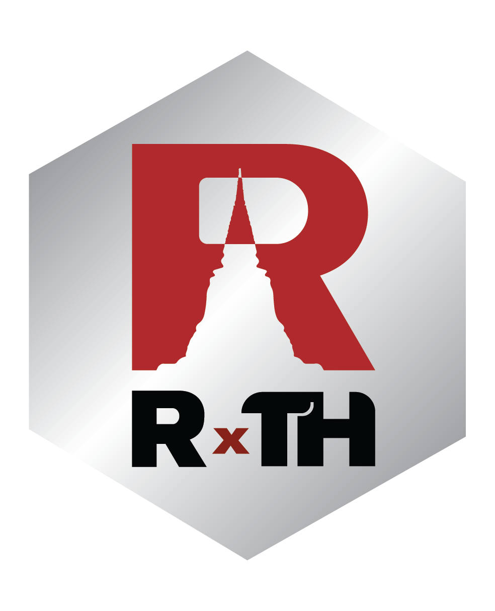
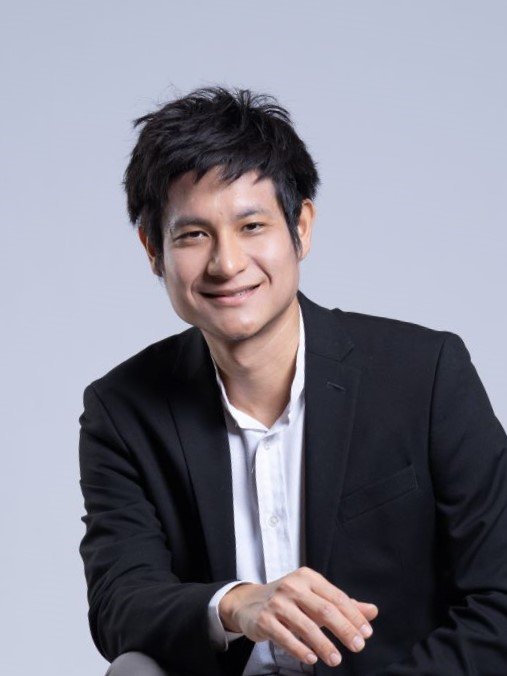
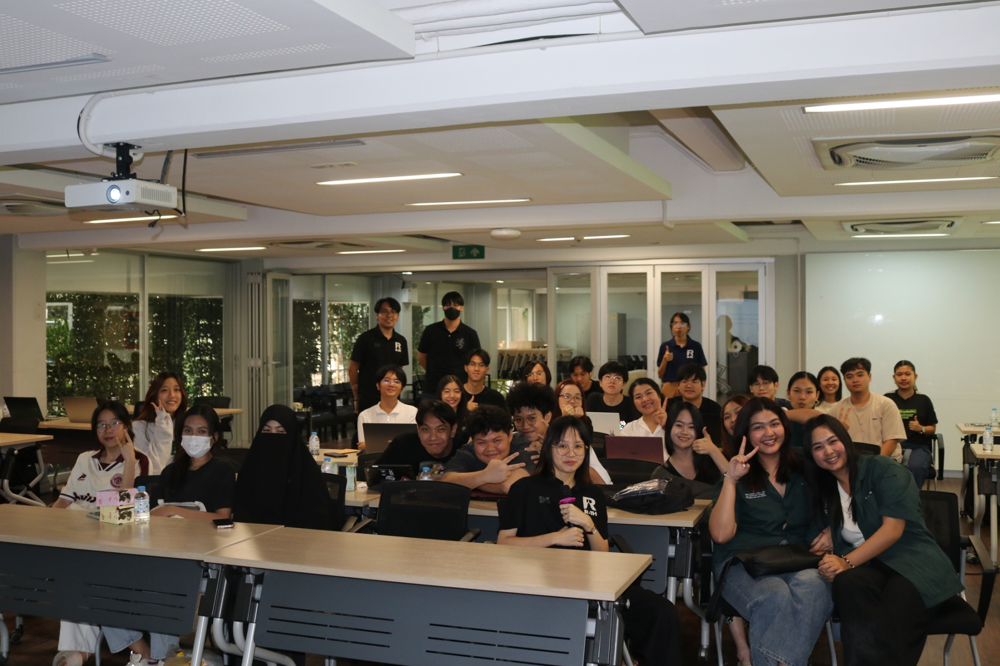
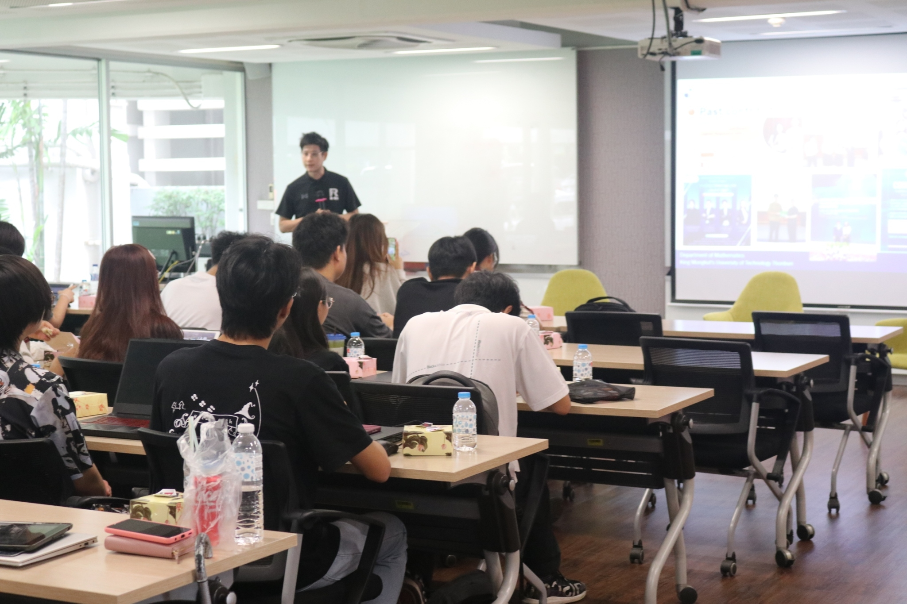

Dr. Nathakhun Wiroonsri is an academic at the Department of Mathematics, Faculty of Science, King Mongkut’s University of Technology Thonburi in Thailand. With a strong foundation in applied mathematics, Dr. Wiroonsri’s expertise lies in theoretical probability, machine learning, and statistical analysis. His research aims to bridge these areas to develop innovative methodologies for solving real-world problems, particularly in clustering and healthcare applications.

Beyond his academic pursuits, Dr. Wiroonsri is deeply involved in promoting the use of R in Thailand. He founded R x TH, Thailand’s R user group supported by the R Consortium, to foster collaboration and build a vibrant community for R enthusiasts. His efforts include organizing workshops for beginners, experienced users, and professionals, aiming to make R more accessible and appealing across industries, especially among the younger generation.
Your group recently held its very first event. How did it go? Can you share more about the topics covered?
Our first event focused on providing a solid introduction to R. We covered foundational topics such as basic syntax, coding practices, and essential packages like ggplot2. The session was hands-on, starting with how to install R and the key packages, so participants could follow along easily.

The event was a success, thanks in large part to my master’s students: Onthada and Noppanon, who played a key role in organizing and leading the workshop. It even sparked interest among younger students—several approached me afterward, eager to take my data science course next semester, even though it’s typically designed for junior students.

As for the course itself, I initiated it about four years ago as a special topic, and after receiving positive feedback, it became a core part of the program. For the workshop, we prepared tutorial materials that participants could follow step by step. Right now, those materials are only shared within the group, but we may consider making them public in the future.

Which ISC project(s) have you used? If none, which one(s) look like something you might look into (and why)?
To be honest, I only recently realized that the R Consortium funds ISE projects after you sent me the question. I looked into them briefly, and they all seem quite interesting. One that caught my attention is autotest.
As someone with experience publishing R packages, I know how challenging it is to catch every error. Despite double- and triple-checking for issues, once a package is released and used by real users, unexpected errors often surface. A tool like autotest, which helps identify potential issues before publishing, would be incredibly helpful. Being able to ensure the package is as close to error-free as possible before release would make a big difference. I’m definitely planning to use autotest in the future.
What trends do you see around the R language?
In Thailand, there’s a clear trend among the younger generation toward learning Python. Even students in our statistics and data science program express interest in Python. However, we still focus on using R in our curriculum. The challenge is that many R users in Thailand, particularly in academia, tend to use it in traditional ways—relying on existing packages for data analysis. This makes it harder to attract younger users to R.
When I attended the useR! conference this past year, I discovered many modern techniques and packages in R that could appeal to younger users, such as tools for creating content, slides, and publications—like Quarto. I tried Quarto myself recently and found it very promising. I believe introducing these modern tools through workshops could resonate with younger users and professionals in industry, showing them that R can be just as innovative and versatile as other tools.
Our user group is based at a university, so it naturally draws students. However, we’re also planning workshops tailored to professionals, starting with healthcare. Since we’re currently working on a project related to diabetes classification, we plan to hold a workshop for healthcare professionals once the project is complete. This will give us a chance to share our new methodology, demonstrate its applications in healthcare, and encourage attendees to explore R further. I think this approach will help us reach new audiences and grow interest in R.
How do I Build an R User Group?
R Consortium’s R User Group and Small Conference Support Program (RUGS) provides grants to help R groups organize, share information, and support each other worldwide. We have given grants over the past four years, encompassing over 76,000 members in over 90 user groups in 39 countries. We would like to include you! Cash grants and meetup.com accounts are awarded based on the intended use of the funds and the amount of money available to distribute